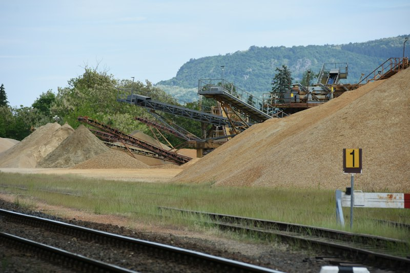
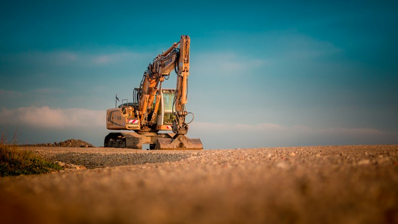
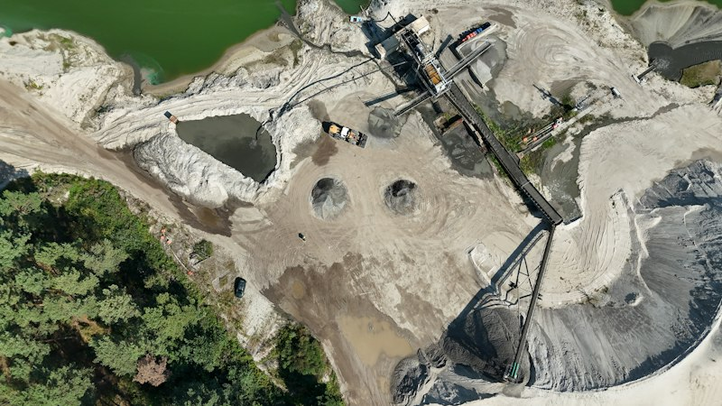
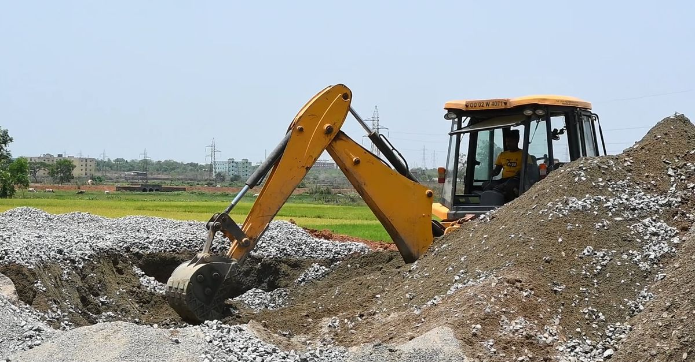

Rigueur
Des interventions préparées selon les contraintes du chantier.
Des équipes réactives, du matériel adapté et un déroulé maîtrisé pour faire avancer vos chantiers en toute confiance.
Découvrir notre expertiseComprendre le besoin et les contraintes du chantier.
Définir les moyens et organiser le calendrier.
Organiser l’équipe et les engins nécessaires.
Coordonner l’intervention sur le terrain.
Vérifier l’avancement et les livraisons.
Une organisation de terrain qui privilégie la sécurité, la clarté des échanges et une exécution adaptée à votre projet.
Des interventions préparées selon les contraintes du chantier.
Des échanges directs pour faire avancer vos travaux.
Des équipes et des moyens adaptés à la mission.
La sécurité et le respect des délais convenus.
Nous faisons le lien entre la préparation du site, les moyens à mobiliser et l’approvisionnement en matériaux pour garder une intervention lisible et coordonnée.
Nous prenons en compte la nature du site, ses accès, les zones de travail et les contraintes de circulation avant de proposer les moyens à engager.
Selon la mission, nous organisons la mobilisation d’engins et d’équipes pour réaliser les opérations de dragage, de terrassement et de manutention.
Nous coordonnons la fourniture de matériaux et gardons un échange clair sur le planning, les quantités et l’avancement de la prestation.
Années d’expérience
Chantiers réalisés
Clients satisfaits
Tonnes de matériaux livrés
Voici quelques exemples de travaux réalisés dans des contextes variés : dragage, terrassement, aménagement de plate-forme et fourniture d’agrégats.

DragageExtraction et déplacement des matériaux, organisés en fonction des accès et des volumes à traiter.
Voir le détail
TerrassementDécapage, déblais et nivellement pour mettre le terrain en état avant les travaux.
Voir le détail
BTPPréparation des emprises et organisation du terrain selon les besoins du chantier.
Voir le détail
AgrégatsLivraison régulière et contrôlée pour des projets BTP et de terrassement.
Parler de mon chantier